“阿基米德向多西修斯（Dositheus）致意．
前些时候，我把到那时为止所得到的结果及其证明送到你那里，说明由一直线和直角圆锥的截线［一条抛物线］所围成的弓形是与弓形同底等高的三角形的4/3．从那时起，我又发现并证明
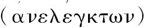
了一些以前未被发现的定理．它们是：首先，任一球面是它的最大圆的四倍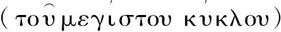
；其次，球缺的表面等于一个圆，该圆的半径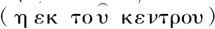
等于从球缺顶点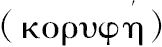
到球缺底圆圆周所连的线段；进一步，底等于球的大圆、其高等于球的直径的圆柱是球的3/2，圆柱的面［包括底面］是球面的3/2．尽管这些性质是上述图形所固有的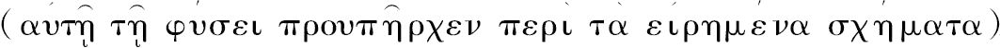
，但却不为我的从事几何研究的前辈们所知．一发现这些性质确为这些图形所具有，我就毫不犹豫地把它们连同我以前的结果以及欧多克索斯（Eudoxus）的关于立体的定理放在一起．欧多克索斯的定理不可辩驳地被确定，即同底等高的棱锥是棱柱的1/3，同底等高的圆锥是圆柱的1/3．这些性质也是这些图形所固有的，但事实上欧多克索斯以前的许多出色的几何学家既没有提到也不知道这些性质．不过，我现在就可以把这些性质提供给那些能够审查我发现的人．这些性质本应在科农（Conon）在世的时候发表，我想他能够掌握并能给予足够的重视．我认为让那些关注数学的人了解这些性质是很好的．因此，我把证明寄给你，以供数学家们研究．再见．”我首先列出在证明我的命题时所用的定义[2]和假设（或公理）．
定义
1.平面上有一类有端点的曲线
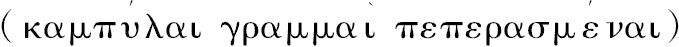
[3]，其上的点或者全部落在端点连线的同一侧，或者没有点落在另一侧．2.给定术语“一条曲线凹向同一方向”：如果任取其上两点，连接两点的直线段或全部落在曲线的同一侧，或一些点落在其相同一侧，其他点落在曲线上，但无点落在另一侧．
3.同样，有一类有界线的曲面，自身并不在一个平面上，但其线界在一个平面上，其上的点或者全部落在线界所在平面同一侧，或都没有点落在另一侧．
4.给定术语“一条曲面凹向同一方向”：如果任意取其上两点，连接两点的直线段或全部落在曲面的同一侧，或一些点落在其相同一侧，其他点落在曲面上，但无点落在其另一侧．
5.给定术语“立体扇形”：当一个圆锥截一个球，且圆锥的顶点位于球心，用被锥面和圆锥内的球面所围成的图形来表示它．
6.给定术语“立体菱形”：当同底的圆锥的顶点在底面的异侧，且它们的轴线在一直线上，用两圆锥组成的立体图形来表示它．
假设
1.有同端点的一切线中直线段最短[4]．
2.同一平面上有公共端点的线中，如果任何这样两条线是不相等的，它们都是凹向同一方向，并且其中一条要么整个包含在另一条内，要么一部分包含于其中，一部分重合，那么这时里面的那条线是两线中较短的．
3.同样，有共同线界于一平面的曲面中，该平面面积最小．
4.在有共同端线于一平面的曲面中，如果任何这样两个面是不相等的，它们都是凹向同一方向，并且，要么整个包含在另一曲面内，要么一部分包含于其中，一部分重合，那么这时里面的曲面是两曲面中面积较小的．
5.进而有，在不等的线段，不等的面，不等的体中，较大的超过较小的那部分量，若自我累加，可以超过任何可以互相比较的给定量．[5]．
预先指出一个明显的命题，即，圆的内接多边形的周长小于圆的周长，多边形的任一边小于其所切割的圆周部分．
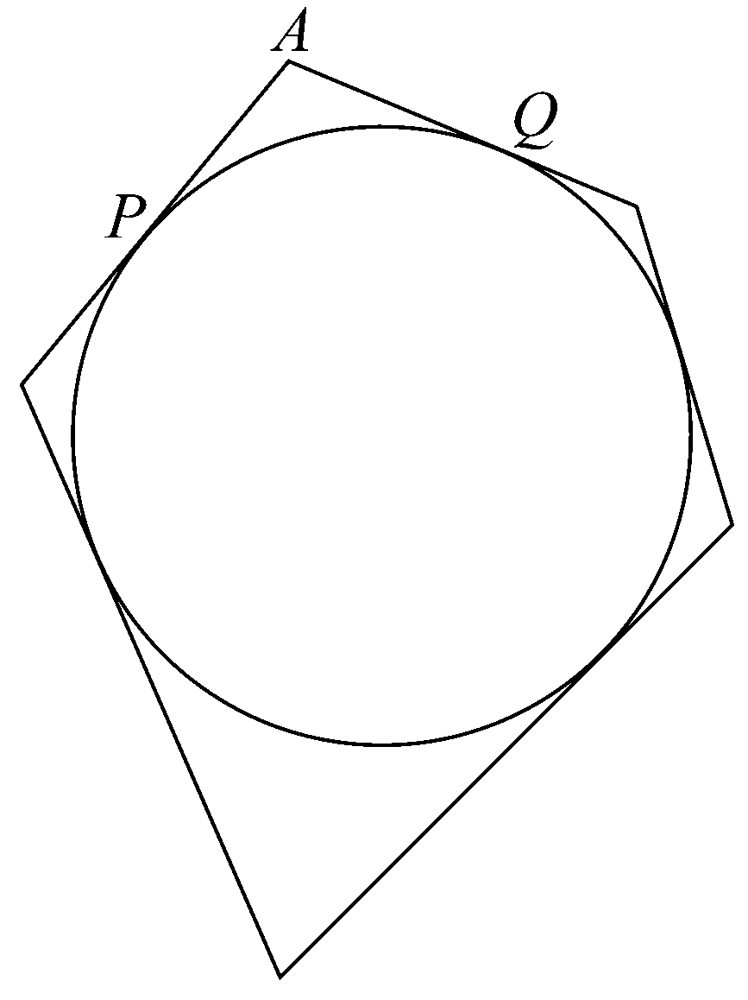
命题1 外切于圆的多边形的周长大于圆的周长．
设交于点A的相邻边分别切圆于P、Q．
那么
PA＋AQ＞（弧PQ）． ［假设2］
类似地，对于多边形每一个角，不等式都成立；相加，便得到所求结果．
命题2 给定两个不等的量，则可求得两不等的线段，使得大、小两线段之比小于大、小两量之比．
设AB，D表示两不等量，且AB＞D．
假设沿AB量得的BC等于D，又设GH是任一线段．
如果以AC足够多的倍数加到AC上，其和将超过D．设AF为这个和，又沿GH取一点E，使得GH是HE的倍数与AF是AC的倍数相同．
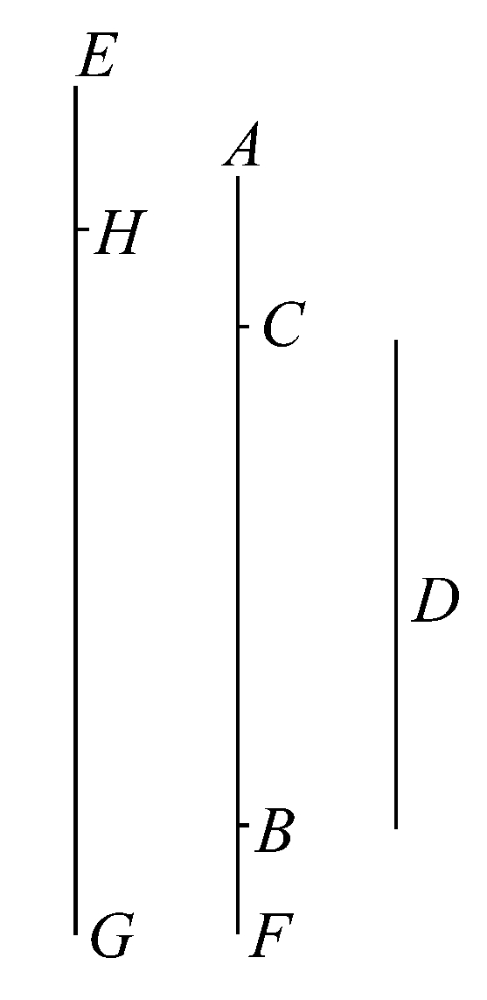
于是 EH：HG＝AC：AF．
但是，因为 AF＞D（或BC），
所以 AC：AF＜AC：CB．
［那么 EH：HG＜AC：CB.］
因此，由合比，就有
EG：GH＜AB：D．
因此EG、GH就是满足要求的两线段．
命题3 给定两不等量和一圆，则可作出圆的外切和内接多边形，使得外切多边形的边长与内接多边形边长之比小于大、小两量之比．
设A、B表示给定的两不等量，且A＞B．
可求得两线段F、KL，F＞KL，使得
F：KL<A：B （1） ［命题2］
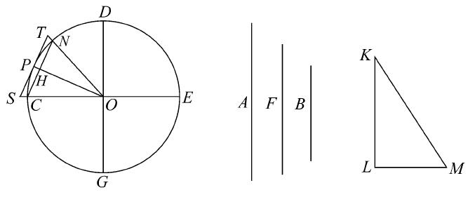
作LM垂直于LK，且令其长线段KM＝F．
设CE，DG是已知圆内交成直角的两直径，然后平分角DOC，将一半角再平分，如此继续作下去，我们将得到一个角（如∠NOC）小于二倍∠LKM．
连接NC，它将是圆内接正多边形的一边．设OP是平分∠NOC的圆的半径（因此它在H点垂直平分NC，且设在点P的切线与OC、ON的延长线分别相交于S、T．
因为 ∠CON＜2∠LKM，
于是 ∠HOC＜∠LKM，
且在点H、L的角都是直角；
所以 MK：LK＞OC：OH
＞OP：OH．
因此 ST：CN＜MK：LK[6]
＜F：LK；
所以，由（1），更有
ST：CN＜A：B．
这样，求得的两多边形满足要求．
命题4 给定两不等量和一个扇形，则可作出扇形的外切多边形和内接多边形，使得外切多边形的边长与内接多边形的边长之比小于大、小两量之比．
［在这个命题中，求得的“内接多边形”是以限制扇形的两半径代替两边，而其余各边（由作图，它的边数为2的乘方）所对的各扇形是等弧的；形成的“外切多边形”是由平行于内接多边形的边的切线和以两半径为边所形成的．］
在此，同样可以如上一个命题那样的作图，代替两直径交成直角的是将扇形的角COD平分，然后将一半角再平分，如此继续下去．证明完全类似于上述命题．
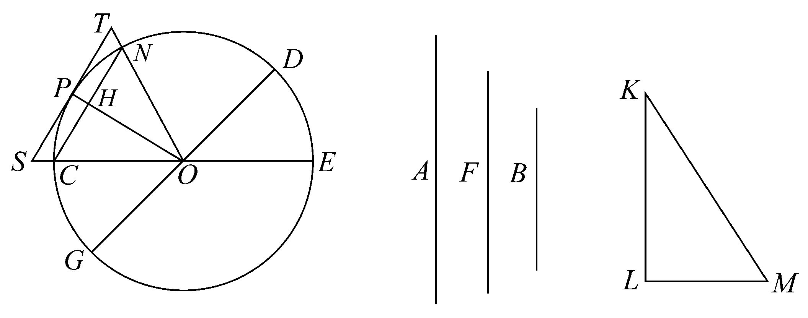
命题5 给定一圆和两个不等量，则可作出圆的外切和内接多边形，使其两多边形面积之比小于大、小两量之比．
设A是给定的圆，B、C是给定的量，且B＞C．
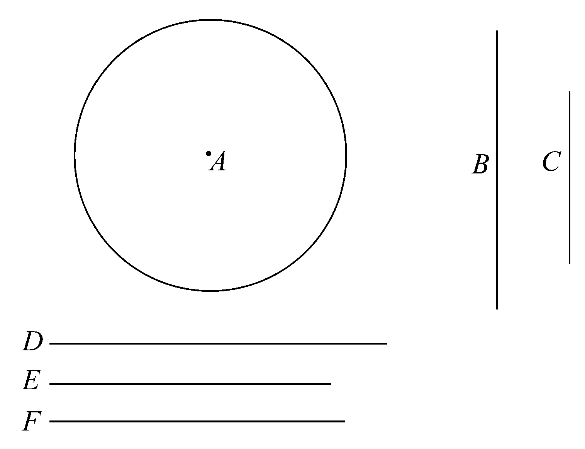
取两不等的线段D、E，且D＞E，使得
D：E＜B：C， ［命题2］
设F是D、E的比例中项，于是D也大于F．
作圆的外切、内接多边形（如同命题3），且使其两多边形边之比小于D：F．
于是两多边形边的二次比小于D2：F2．
但是该对应边的二次比等于多边形面积之比，因为它们是相似的．
所以圆外切多边形面积与内接多边形面积之比小于D2：F2（或D：E），且更有，小于B：C．
命题6 “（同样），给定两个不等量和一个扇形，则可作出相似的扇形的外切、内接多边形，使得两多边形面积之比小于大、小两量之比．
给定一圆或一扇形，以及一个确定的面积，则可作圆或扇形的内接等边多边形，并使其边数不断增加，则可得圆或扇形余下的面积小于给定的面积．（这是在［Eucl.XII.2］中被证明了的）．
（但仍需证明）：给定一圆或一扇形，以及一给定的面积，则可作一圆外切多边形，使得圆与外切多边形之间的图形的面积小于给定的面积．”
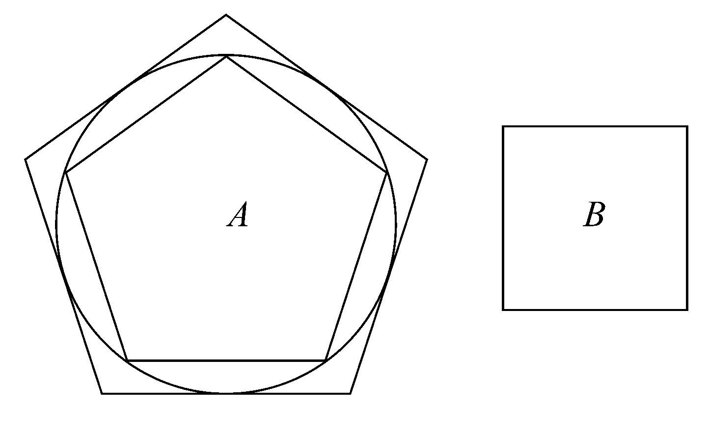
对于圆，证明如下［阿基米德说，证明同样适用于扇形］．
设A是给定的圆，B是给定的面积．
现在，有两个不等量A＋B和A，如在［命题5］中那样，设圆的外切多边形（C）和内接多边形（I）［如在命题5中］，使得
C：I＜（A＋B）：A． （1）
这个外切多边形（C）将是所求作的．
因为圆（A）大于内接多边形（I）．
所以由（1），更有
C：A＜（A＋B）：A，
因此 C＜A＋B，
或 C-A＜B．
命题7 如果底为正多边形的棱锥内接于一个等腰圆锥［即正圆锥］，则棱锥侧面等于一个三角形，该三角形以棱锥底面周长为底，以从顶点到底面一边的垂线为高．
因为棱锥底面的边都相等，由此可得，从顶点到所有边的垂线也都相等，该命题的证明是显然的．
命题8 如果一个棱锥外切于一个等腰圆锥，则棱锥的侧面等于一个三角形，该三角形的底等于棱锥底面的周长，而高等于圆锥的母线．
棱锥的底是一个外切于圆锥底面的多边形，连接圆锥顶点到棱锥任一边的切点的直线垂直于该边．这些垂线是圆锥的母线，它们是相等的，于是命题得证．
命题9 在等腰圆锥底圆上任取一弦，且分别连接圆锥顶点与弦的端点，这样构成的三角形小于从顶点所作的两线段截得圆锥的部分侧面．
设ABC是圆锥的底圆，O是圆锥的顶点．
在圆上作弦AB，连接OA、OB．等分弧ACB于点C，连接AC，BC，OC．
那么 △OAC＋△OBC＞△OAB．
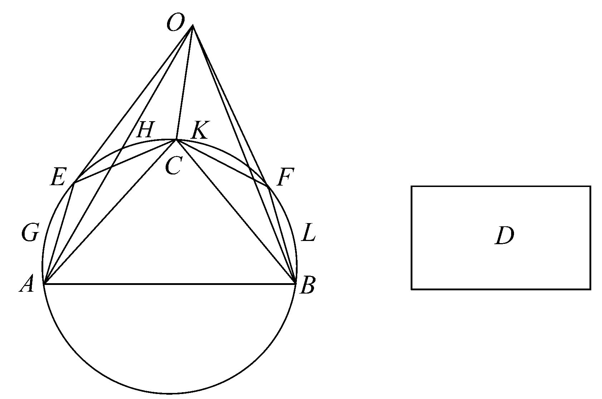
设前两个三角形之和与第三个三角形的差等于D．
那么D小于或不小于两弓形AEC、CFB之和．
Ⅰ.设D不小于两弓形AEC、CFB之和．
现在有两个面：
（1）由圆锥部分侧面OAEC与弓形AEC构成的；
（2）三角形OAC．
因为两面有相同的端线（即三角形OAC的周边），那么前述的面大于被包含的后者的面． ［假设3或4］
因此
面OAEC＋弓形AEC＞△OAC．
类似地
面OCFB＋弓形CFB＞△OBC．
又因为D不小于两弓形之和，两式相加，就有
面OAECFB＋D＞△OAC＋OBC
＞△OAB＋D，由假设．
该式两边减去D，我们就得到了所需要的结果．
Ⅱ.设D小于两弓形AEC、CFB之和．
如果现在我们平分两弧AC、CB，然后将各半弧再平分，如此继续分下去，直到最后剩下的所有弓形之和小于D． ［命题6］
设这些弓形是AGE，EHC，CKF，FLB，连接OE，OF．
如前，有
面OAGE＋弓形AGE＞△OAE
和 面OEHC＋弓形EHC＞△OEC．
所以 面OAGHC＋（弓形AGE，EHC）
＞△OAE＋△OEC
＞△OAC．
类似地，对于由OC，OB和弧CFB所围成的圆锥的部分侧面亦有如上结果．
于是相加，就有
面OAGEHCKFLB＋（弓形AGE，EHC，CKF，FLB）
＞△OAC＋△OBC
＞△OAB＋D，由假设．
但是，这些弓形之和小于D，于是便得出所需求的结果．
命题10 在等腰圆锥底圆所在的平面上，若圆的两切线交于一点，且分别连接圆锥顶点与交点及切点，那么由所连线段与二切线所成两三角形之和大于圆锥被围的部分侧面．
设ABC是圆锥的底圆，O是圆锥的顶点，AD，BD是圆的两条切线，且相交于D．连接OA，OB和OD．
过弧AB的中点C作圆的切线ECF，于是它平行于AB．连接OE，OF．
那么 ED＋DF＞EF．
将AE＋FB加到式子两边，就有
AD＋DB＞AE＋EF＋FB．
由于OA，OC，OB是圆锥的母线，因而都相等，且它们分别垂直于在A、C和B点的切线．
由此得出
△OAD＋△ODB＞△OAE＋△OEF＋△OFB．
设
（△OAD＋△ODB）-（△OAE＋△OEF＋△OFB）＝G．
设圆与切线围成的两面EAHC，FCKB之和为L，那么G小于或不小于L．
Ⅰ.设G不小于L．
现在有两个面：
（1）以O为顶点，以AEFB为底的棱锥，除去OAB面外的其余锥面；
（2）由圆锥部分侧面OABC和弓形ACB构成．
这两个面有相同的线界，即三角形OAB的周边．因为前者包含后者，于是前者较大． ［假设4］
即取掉面OAB的棱锥的面大于面OACB与弓形ACB之和．我们有
△OAE＋△OEF＋△OFB＋L＞面OAHCKB．
又G不小于L．
因此
△OAE＋△OEF＋△OFB＋G＞面OAHCKB，
又由假设
△OAE＋△OEF＋△OFB＋G＝△OAD＋△ODB．
所以
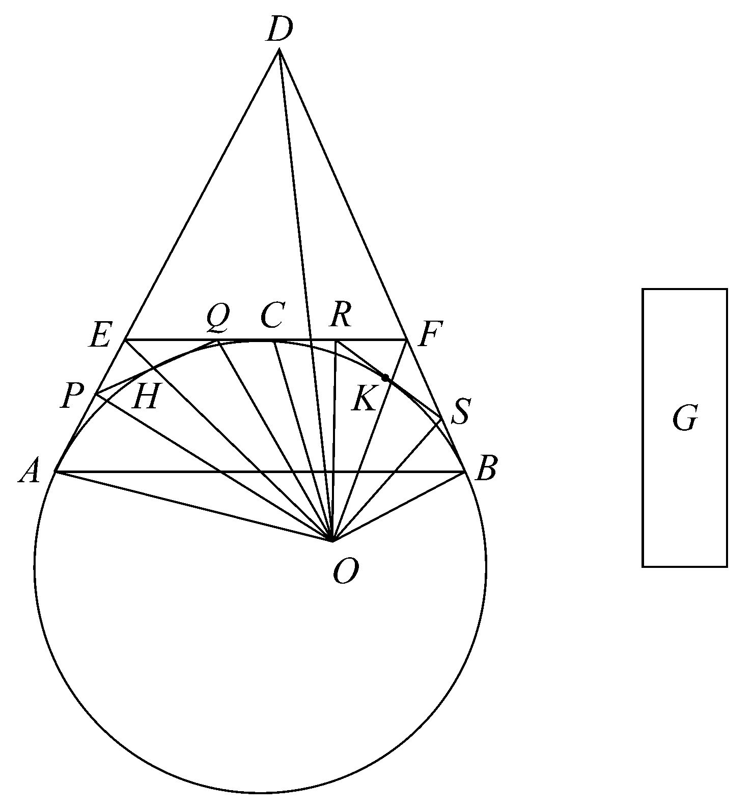
△OAD＋△ODB＞面OAHCKB．
Ⅱ.设G小于L．
如果平分弧AC，CB，且过每个中点作切线，然后将每一半弧再平分，且过每一分点再作切线，如此继续作下去，直到最后将得到一个多边形，使得多边形的边和弓形弧之间的面小于G．
设弓形的弧与多边形APQRSB之间的面是M．连接OP，OQ，等等，
如前，有
△OAE＋△OEF＋△OFB＞△OAP＋△OPQ
＋…＋△OSB．
也如前，
除面OAB外的棱锥OAPQRSB的面
＞圆锥部分侧面OABC＋弓形OACB．
从上式两边取掉弓形OACB，就有
△OAP＋△OPQ＋…＋M＞圆锥部分侧面OABC．
由假设
△OAE＋△OEF＋△OFB＋G＝△OAD＋△ODB．
因此，更有
△OAD＋△ODB＞圆锥部分侧面OABC．
命题11 如果用平行于直圆柱的轴的平面截圆柱，那么截得圆柱部分侧面大于截得圆柱内的平行四边形．
命题12 过直圆柱两条母线端点引各自所在底圆的切线，如果切线相交，那么由每一母线和相应的切线分别构成的两矩形之和大于包含在两母线间的圆柱部分侧面．
［这两个命题的证明可分别依照命题9，10的方法．因而，再证它们就不必要了．］
“从已证明的性质，显然有：（1）如果一个棱柱内接于一个直圆柱，那么棱柱的侧面小于圆柱的侧面；（2）如果一个棱柱外切于一个直圆柱，那么棱柱的侧面大于圆柱的侧面．”
命题13 直圆柱的侧面等于以底圆直径和圆柱高的比例中项为半径的圆．
设圆柱的底是圆A，作CD等于圆的直径，且EF等于圆柱的高．
设H是CD、EF的比例中项，B是半径等于H的圆．
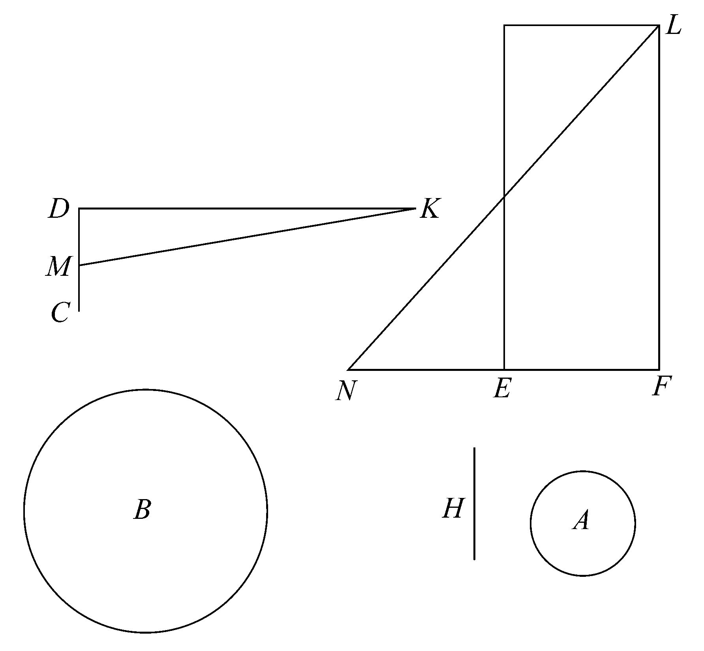
那么圆B将等于圆柱的侧面S．
否则，B必大于S或者B小于S．
Ⅰ.假设B＜S．
可以作圆B的外切多边形和内接多边形，使其两多边形之比小于S：B．
假设上述图已作出，又在圆A上作相似于圆B外切多边形的外切多边形，然后在其上竖立一个与圆柱同高的棱柱，那么此棱柱外切于圆柱．
设垂直于CD的KD和垂直于EF的FL都等于圆A外切多边形的周长．平分CD于M，连接MK．
于是 △KDM＝圆A外切多边形．
也有 矩形EL＝棱柱的侧面．
延长FE到N，使得FE＝EN，连接NL．
又关于圆A、B的两外切相似多边形之比等于圆A、B半径的二次比．
这样，就有
△KDM：B的外切多边形＝MD2：H2
＝MD2：CD·EF
＝MD：NF
＝△KDM：△LFN
［因为DK＝FL］．
所以 B的外切多边形＝△LFN
＝矩形EF
＝A上圆柱的外切棱柱侧面．
但是 B外切多边形：B内接多边形＜S：B．
所以
A上圆柱的外切棱柱侧面：B内接多边形＜S：B．
交换两内项，亦有
A上圆柱的外切棱柱侧面：S＜B内接多边形：B．
这是不可能的，因为棱柱侧面大于S，而B内接多边形小于B．
所以
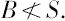
．Ⅱ.假设B＞S．
设圆B的外切、内接正多边形，有
B外切多边形：B内接多边形＜B：S．
在圆A作相似于圆B内接多边形的内接多边形，然后在其上竖立一个与圆柱同高的棱柱．
如前，又设已作的DK、FL都等于圆A内接多边形的周长．
那么，就有
△KDM＞A内接多边形
［因为从圆心到多边形一边的垂线小于A的半径．］
也有△LFN＝矩形EL＝（棱柱的侧面）．
现在
A内接多边形：B内接多边形＝MD2：H2
＝△KDM：△LFN，如前．
且 △KDM＞A内接多边形．
所以
△LEN或者棱柱的侧面＞B内接多边形．
但是，这是不可能的，因为
B外切多边形：B内接多边形＜B：S，
＜B外切多边形：S，
于是 B内接多边形＞S
＞棱柱的侧面．
因此B即不大于又不小于S，于是
B＝S．
命题14 等腰圆锥侧面等于一圆，该圆半径是圆锥母线与底面半径的比例中项．
设圆A是圆锥的底，作C等于该圆的半径，D等于圆锥的母线，又设E是C、D的比例中项．
作以E为半径的圆B，那么圆B将等于圆锥的侧面S．否则，B必大于或小于S．
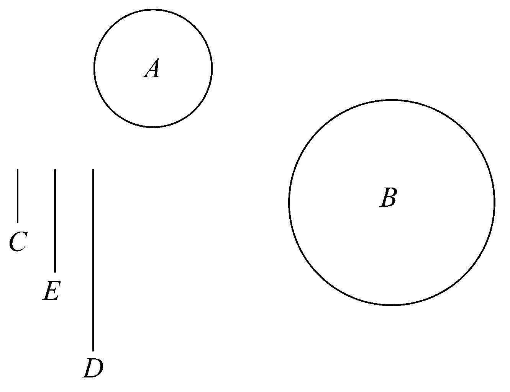
Ⅰ.假设B＜S．
作圆B的外切正多边形，并作与其相似的圆B的内接多边形，且使其前、后两多边形之比小于S：B．
又作圆A的与其相似的外切多边形，并在它上建立一个与圆锥有同一顶点的棱锥．于是
A的外切多边形：B的外切多边形
＝C2：E2
＝C：D
＝A的外切多边形：棱锥的侧面．
所以
棱锥的侧面＝B的外切多边形．
由于
B的外切多边形：B的内接多边形＜S：B．
所以
棱锥的侧面：B的内接多边形＜S：B．
这是不可能的，因为棱锥的侧面大于S，而B的内接多边形小于B．
因此
Ⅱ.假设B＞S．
取两正多边形分别外切、内接于圆B，使其两多边形之比小于B：S．
在圆A内作一个与圆B的内接多边形相似的内接多边形，且在A的内接多边形上竖立一个与圆锥有同一顶点的棱锥．
于是
A的内接多边形：B的内接多边形＝C2：E2
＝C：D
＞A的内接多边形：棱锥的侧面．
这是清楚的，因为C与D之比大于从A的圆心到多边形的垂线与从圆锥顶点到多边形每一边垂线之比[7]．
所以 棱锥的侧面＞B的内接多边形．
但是
B的外切多边形：B的内接多边形＜B：S．
于是就有
B的外切多边形：棱锥的侧面＜B：S．
这是不可能的．
因为B不大于也不小于S，所以
B＝S．
命题15 等腰圆锥的侧面与它的底之比等于圆锥的母线与其底圆半径之比．
由命题14，圆锥侧面等于以圆锥母线与底圆半径的比例中项为半径的圆．
由此，因为两圆之比等于它们半径的二次比，于是命题得证．
命题16 若以平行于等腰圆锥底的平面截圆锥，那么在两平行平面之间圆锥的部分侧面等于一个以（1）与（2）的比例中项为半径的圆，其中（1）为被两平行平面截得的圆锥部分母线，（2）为两平行平面内圆的半径之和．
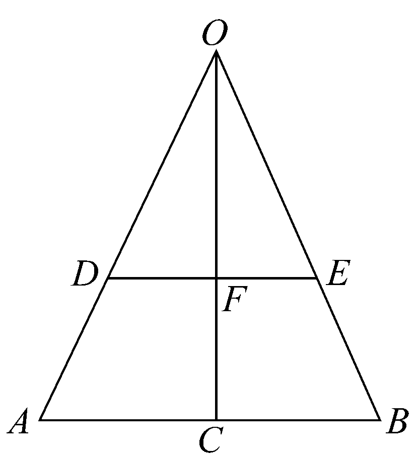
设OAB是一个通过圆锥轴的三角形，DE是它与平行于底面的平面的交线，且OFC是圆锥的轴．
而且，圆锥OAB的侧面等于以
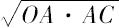
为半径的圆． ［命题14］类似地，圆锥ODE的侧面等于以为半径的圆．
且平截头体的侧面等于两圆之差．
现在
OA·AC-OD·DF＝DA·AC＋OD·AC-OD·DF．
但是 OD·AC＝OA·DF，
因为 OA：AC＝OD：DF．
因此，
OA·AC-OD·DF＝DA·AC＋DA·DF
＝DA·（AC＋DF）．
因两圆之比等于它们半径的二次比，由此推出分别以
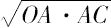
、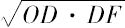
为半径的两圆之差等于以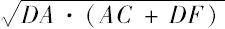
为半径的圆．所以平截头体的侧面就等于以为半径的圆．
引理
1.等高圆锥之比等于它们两底之比；又有等底圆锥之比等于它们两高之比．[8]
2.如果一个圆柱被平行于它的底的平面所截，那么两圆柱之比等于它们两轴之比．[9]
3.有同底的两圆锥之比等于其底上有等高的两圆柱之比．
4.也有，等圆锥的底与高成反比例；又若两圆锥的底与高成反比例，则两圆锥相等．[10]
5.底的直径与轴有同比的两圆锥之比等于它们直径的三次比．[11]
所有这些命题已在早期的几何中被证明了．
命题17 若有两个等腰圆锥，其第一个的侧面等于另一个的底，从第一个圆锥底的中心到其母线的垂线等于另一圆锥的高，则两圆锥相等．
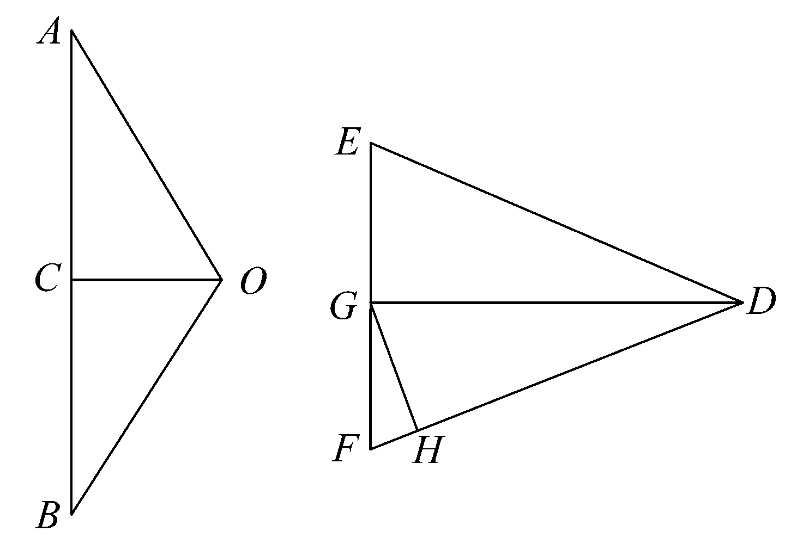
设OAB、DEF分别是通过两圆锥轴的三角形，C、G分别是两底的中心，GH是从G到FD的垂线；且假设圆锥OAB的底等于圆锥DEF的侧面，又OC＝GH．
因为OAB的底等于DEF的侧面，于是
圆锥OAB的底：圆锥DEF的底
＝圆锥DEF的侧面：圆锥DEF的底
＝DF：FG ［命题15］
＝DG：GH 由相似三角形性质，
＝DG：OC．
所以，两圆锥的底和高成反比例，则两圆锥相等． ［引理4］
命题18 由两个等腰圆锥组成的立体扁菱形等于一个圆锥，该圆锥的底等于合成立体扁菱形的两圆锥之一的侧面，它的高等于从第二个圆锥的顶点到第一圆锥母线的垂线．
设扁菱形OABD是由有共同底且顶点为O与D的两圆锥组成，共同底是以AB为直径的圆．
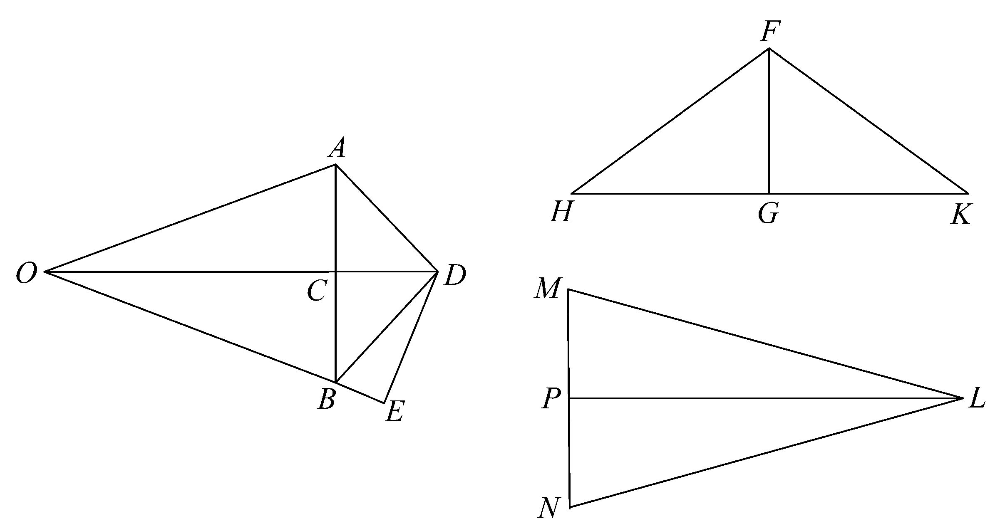
设FHK是另一圆锥，其底等于圆锥OAB的侧面，它的高FG等于从D到OB的垂线DE．
那么，圆锥FHK将等于扁菱形．
作第三个圆锥LMN，使其底等于圆锥OAB的底（以MN为直径的圆），它的高LP等于OD．
因为 LP＝OD，
LP：CD＝OD：CD．
但是
OD：CD＝扁菱形OADB：圆锥DAB， ［引理1］
又 LP：CD＝圆锥LMN：圆锥DAB．
由此得出
扁菱形OADB＝圆锥LMN． （1）
又因为AB＝MN，以及
OAB的侧面＝FHK的底，
FHK的底：LMN的底＝OAB的侧面：OAB的底
＝OB：BC ［命题15］
＝OD：DE 因两三角形相似，
＝LP：FG， 由假设．
于是，在两圆锥FHK、LMN中，它们的底与高成反比例．
所以两圆锥FHK、LMN相等．
由（1），就有圆锥FHK等于给定的立体扁菱形．
命题19 如果以平行于等腰圆锥底面的平面截圆锥，且在所得出的圆形截口上作一个以原圆锥底的中心为顶点的圆锥，如果从原圆锥中取掉如前所述的扁菱形，则所余部分等于一个圆锥，该圆锥的底等于原圆锥夹在平行平面间的部分侧面，它的高等于以原圆锥底的中心向母线所作的垂线．
设圆锥OAB被平行于底的平面截得以DE为直径的圆．设C是圆锥底的中心，且以C为顶点以DE为直径的圆作底作一个圆锥，于是它与圆锥ODE组成为扁菱形ODCE．
取一个圆锥FGH，使其底等于平头截体DABE的侧面，它的高等于从C到AO的垂线CK．
那么该圆锥将等于圆锥OAB与扁菱形ODCE的差．
（1）作一圆锥LMN，使其底等于圆锥OAB的侧面，其高等于CK；
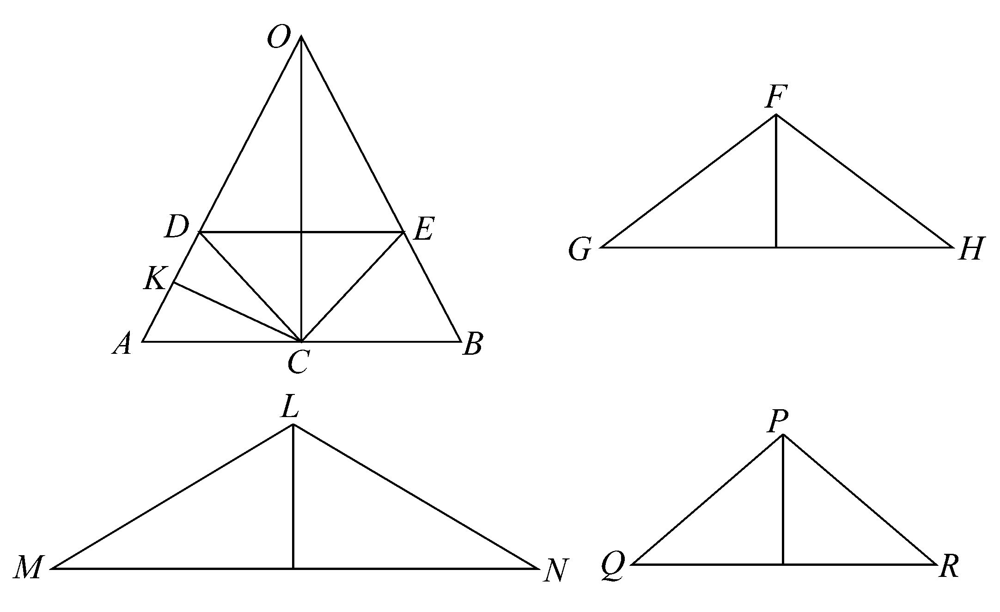
（2）作一圆锥PQR，使其底等于圆锥ODE的侧面，其高等于CK．
因为圆锥OAB的侧面等于圆锥ODE的侧面与平头截体DABE侧面之和，由假设，我们有
LMN的底＝FGH的底＋PQR的底，
又因为三个圆锥的高都相等，所以
圆锥LMN＝圆锥FGH＋圆锥PQR．
但是，圆锥LMN等于圆锥OAB， ［命题17］
圆锥PQR等于扁菱形ODCE． ［命题18］
所以 圆锥OAB＝圆锥FGH＋扁菱形ODCE，
于是命题得到证明．
命题20 若构成一个扁菱形的两个等边圆锥之一被平行于底的平面所截，且在所得到的圆形截口上作一个与第二个圆锥同顶点的圆锥，如果从原扁菱形中取掉所得到的扁菱形，则所余部分将等于一个圆锥，该圆锥的底等于第一个圆锥夹在两平行平面之间的部分侧面，其高等于从第二个[12]圆锥顶点到第一个圆锥母线的垂线．
设扁菱形是OACB，又设圆锥OAB被平行于底的平面截得一个以DE为直径的圆，以该圆为底以C为顶点作一圆锥，该圆锥与ODE构成一个扁菱形ODCE．
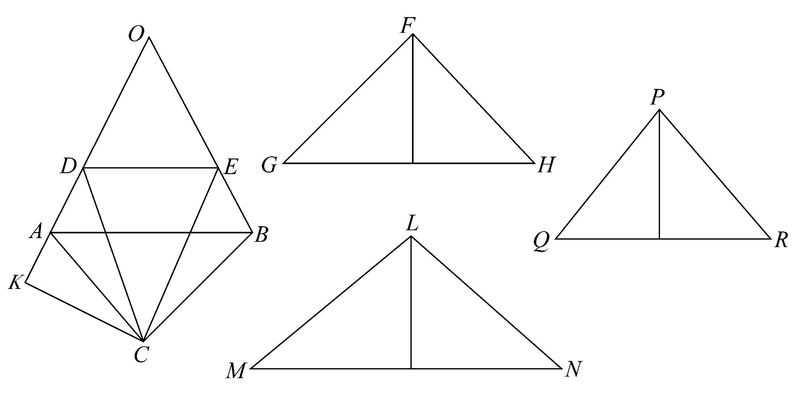
作一个圆锥FGH，使其底等于平头截体DABE的侧面，其高等于从C到OA的垂线CK．
那么，圆锥FGH将等于两扁菱形OACB与ODCE之差．
（1）作一个圆锥LMN，使其底等于OAB的侧面，其高等于CK；
（2）作一个圆锥PQR，使其底等于ODE的侧面，其高等于CK．
因为OAB的侧面等于ODE的侧面与平头截体DABE的侧面之和．由假设，我们有
LMN的底＝PQR的底＋FGH的底，
又三个圆锥的高都相等，
所以 圆锥LMN＝圆锥PQR＋圆锥FGH．
但是，圆锥LMN等于扁菱形OACB，圆锥PQR等于扁菱形ODCE． ［命题18］
因此，圆锥FGH等于两扁菱形OACB与ODCE之差．
命题21 一个内接于圆的边为偶数的正多边形ABC…A'…C'B'A，且使得AA'是一个直径，如果连接相隔的两角点BB'，以及连接平行于BB'的逐对角点的直线CC'，DD'，…，那么
（BB'＋CC'＋…）：AA'＝A'B：BA．
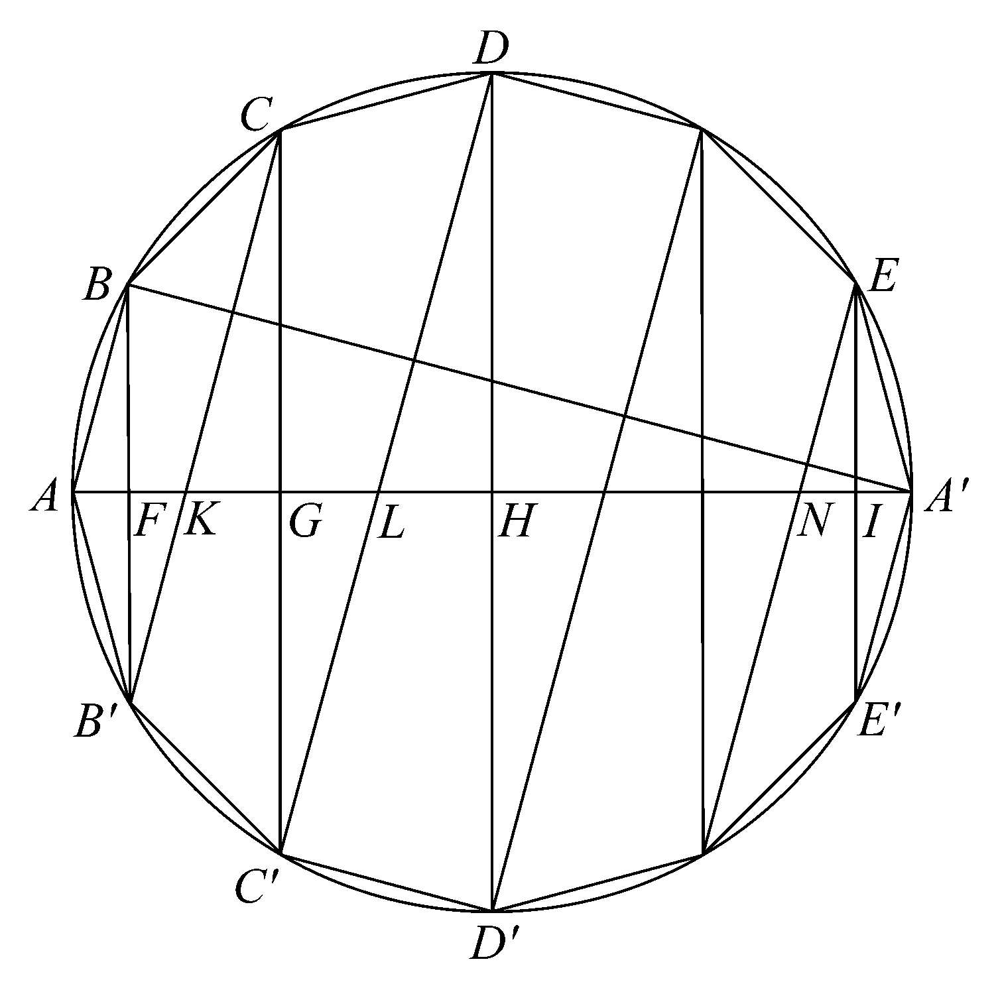
设BB'，CC'，DD'，…交AA'于F，G，H，…；又分别连接CB'，DC'，…交AA'于K，L，…．
显然，CB'，DC'，…互相平行且平行于AB．
因此，由相似三角形，就有
BF：FA＝B'F：FK
＝CG：GK
＝C'G：GL
…
＝E'I：IA'；
且所有前项和后项分别求和，我们就有
（BB'＋CC'＋…）：AA'＝BF：FA
＝A'B：BA．
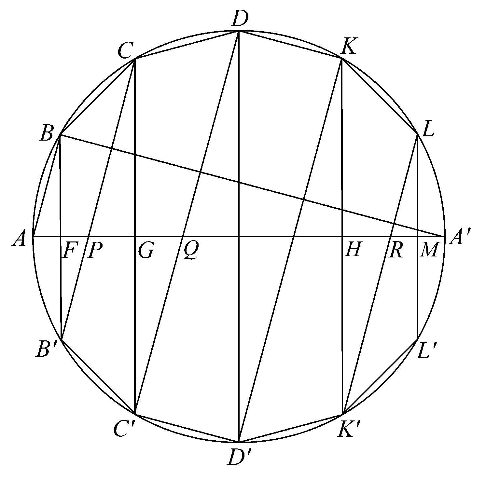
命题22 一个多边形内接于圆弧LAL'，且使得除底边外其余边数为偶数且都相等，如图LK…A…K'L'，A是圆弧的中点，如果连接平行于LL'的逐对角点的直线BB'，CC'，…，那么
（BB'＋CC'＋…＋LM）：AM＝A'B：BA，其中M是LL'的中点，AA'是过M的直径．
如同上一个命题，连接CB'，DC'，…LK'，假设它们与AM相交于P，Q，…R；BB'，CC'，…，KK'交AM于F，G，…，H，由相似三角形，我们有
BF：FA＝B'F：FP
＝CG：PG
＝C'G：GQ
…
＝LM：RM，
且所有前项和后项分别求和，我们得到
（BB'＋CC'＋…＋LM）：AM＝BF：FA
＝A'B：BA．
命题23 球面大于由内接于大圆的正多边形绕其直径旋转所成的面．
取球的一个大圆ABC…，且在其上内接一个边数为4的倍数的正多边形．设AA'，MM'是交成直角的直径，连接多边形相对的角点．
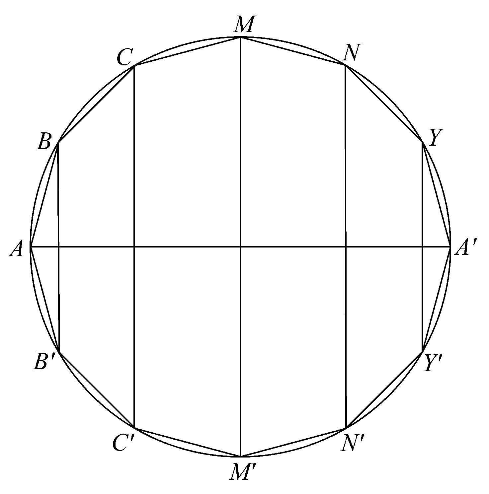
于是，若多边形和大圆绕直径AA'一起旋转，那么除A，A'外，多边形的角点将画出球面上的圆，并且与直径AA'交成直角．其多边形的边将画出部分圆锥面，例如BC将画出部分圆锥的面，该圆锥的底是以CC'为直径的圆，它的顶点是CB，C'B'与直径AA'的交点．
比较半球MAM'和由多边形旋转所得图形中含于半球MAM'的那一半，我们看到半球的面和此内接图形的面有同一边界于一平面中（即以MM'为直径的圆），前一曲面完全包含后者，且它们都凹向同一方向．
所以由［假设4］，半球面大于被包含图形的面；此结果对另一半图形也是成立的．
因此，球面大于其上多边形绕大圆的直径旋转所得的面，这多边形内接于球的大圆．
命题24 设其边数为4的倍数的正多边形AB…A'…B'A内接于球的一个大圆，若连接BB'，以及连接其他平行于BB'的逐对角点的直线，那么多边形绕直径AA'旋转所得内接于球的图形的面等于一个圆，以该圆半径为边的正方形等于长方形
BA（BB'＋CC'＋…）．
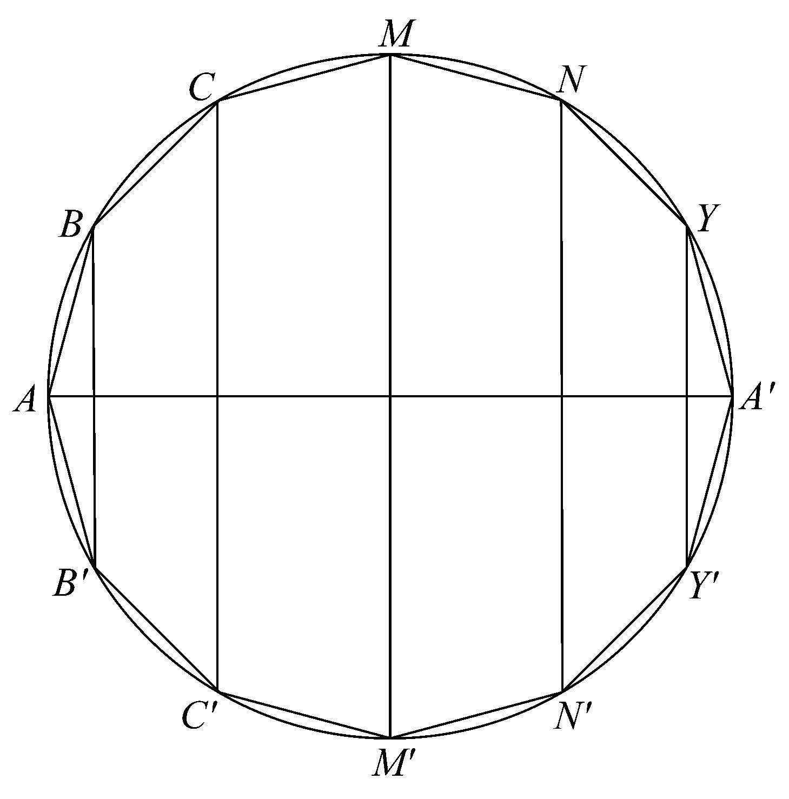
图形的面是由不同的圆锥部分侧面所组成．
因圆锥ABB'的侧面等于一圆，该圆的半径是
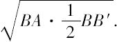
［命题14］平截头体BB'C'C的侧面等于一圆，该圆的半径是
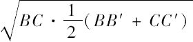
，等等． ［命题16］因为BA＝BC＝…，由此推得整个面等于一个圆，该圆半径等于
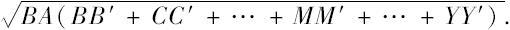
命题25 如在上述命题中那样，内接于一球的由部分圆锥面组成的图形的面小于球大圆的4倍．
设AB…A'…B'A是内接于大圆的正多边形，其边数为4的倍数．
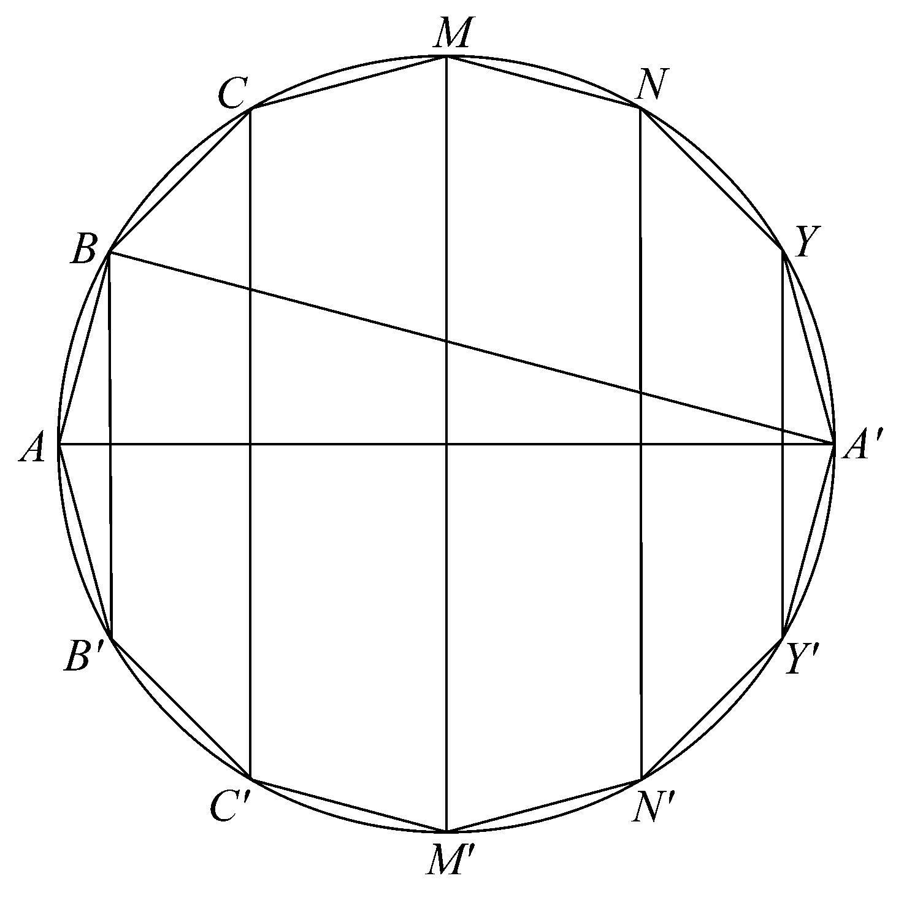
如前，连相对的角点BB'，且CC'，…，YY'平行于BB'．
设R是一圆，其圆的半径的平方等于
AB（BB'＋CC'＋…＋YY'），
于是内接于球的图形的面等于R． ［命题24］
因为
（BB'＋CC'＋…＋YY'）：AA'＝A'B：AB， ［命题21］
因此
AB（BB'＋CC'＋…＋YY'）＝AA'·A'B．
于是 （R的半径）2＝AA'·A'B
＜AA'2．
所以内接的图形的面或圆R小于4倍的圆AMA'M'．
命题26 如前所述的内接于球的图形的体积等于一个锥，该锥的底是一个圆，它等于内接于球的图形的面，该锥的高等于从球心到多边形的边所作的垂线．
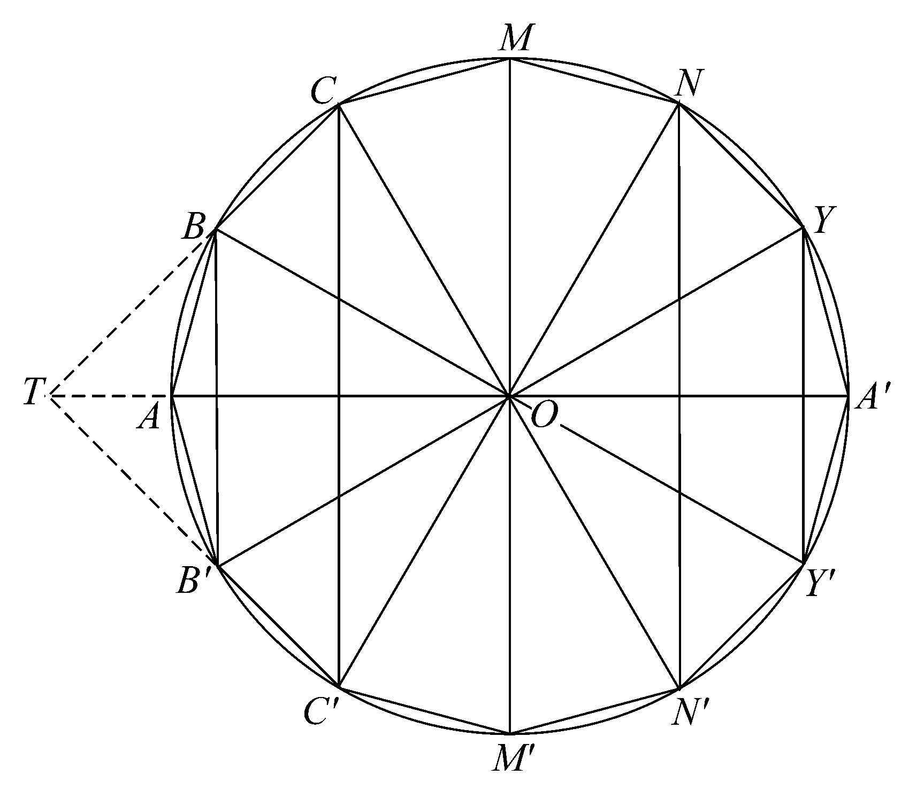
假设，如前AB…A'…B'A是内接于大圆的正多边形，连接BB'，CC'，…
以O为顶点作圆锥，这些圆锥的底是垂直于AA'的平面上以BB'，CC'，…为直径的圆．
由于OBAB'是一个立体扁菱形，它的体积等于一个圆锥，该圆锥的底等于圆锥ABB'的侧面，它的高等于从O到AB所作的垂线［命题8］，设垂线长是p．
设CB、C'B'相交于T，那么三角形BOC绕AA'旋转的部分立体图形等于扁菱形OCTC'和OBTB'之间的差，即等于其底等于平截头体BB'CC'的侧面，其高是p的圆锥． ［命题20］
以这个方法进行下去，因为这些等高圆锥以一个又一个的［这种平截头体的侧面］为其底，将它们相加，我们就证明了旋转体的体积等于一个其高为p的圆锥，该圆锥的底等于圆锥BAB'、平截头体BB'CC'等面之和．即旋转体的体积等于其高为p底等于立体表面的圆锥．
命题27 如前所述的内接于球的图形小于4倍的圆锥，该圆锥的底等于球的大圆，其高等于球的半径．
由［命题26］立体图形的体积等于一个圆锥R，该圆锥的底等于立体图形的面、它的高是从O到多边形任一边作垂线的垂线长p．
取一个其底等于大圆、其高为球的半径的圆锥S．
因为内接的立体的面小于4倍的大圆［命题25］，于是圆锥R的底小于4倍圆锥S的底．
又R的高p小于S的高．
所以R的体积小于4倍S的体积．于是命题得证．
命题28 设一个边数为4的倍数的正多边形AB…A'…B'A外切于已知球的一个大圆，又在多边形外围作另一圆，它与球的大圆有同一个中心．设AA'平分多边形，且交球于a，a'．
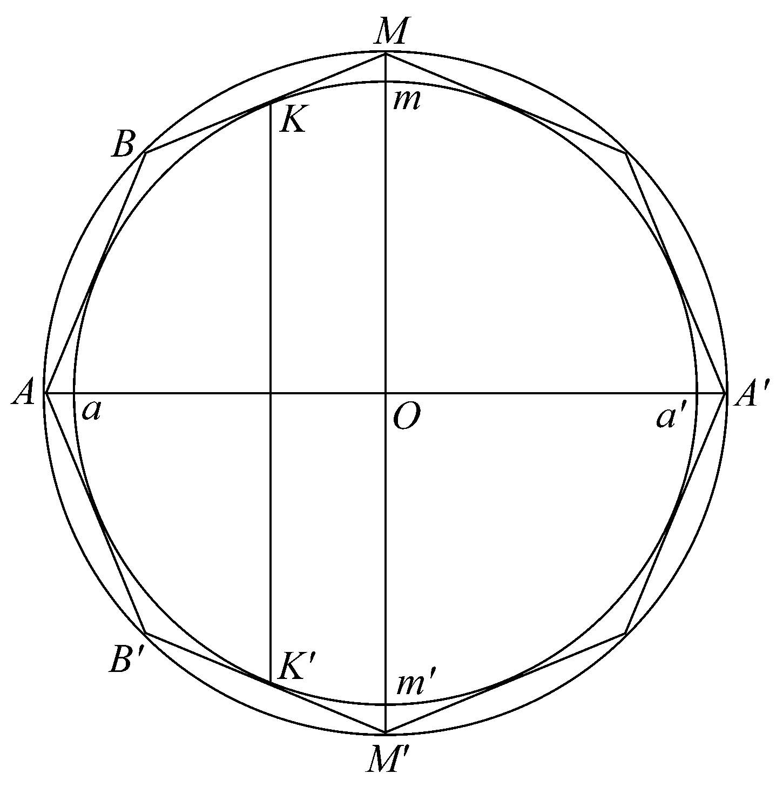
如果大圆和外切多边形绕AA'一起旋转，那么大圆画出一个球面，除A，A'外多边形的角点将绕大球面运动，多边形的边与里面球的大圆的切点将画出该球的圆，该圆的面垂直于AA'，多边形的边将画出部分圆锥面．那么：
外切于球的图形的面将大于球面．
设任一边BM切里圆于K，K'是圆与B'M'的切点．
那么KK'绕AA'旋转画出的圆在一个平面上是两个面的边界：
（1）由圆弧KaK'旋转形成的面；
（2）由部分多边形KB…A…B'K'旋转形成的面．
现在，第二个面完全包含第一个面，且它们两个凹向相同．
所以由［假设4］第二个面大于第一个面．
同样以KK'为直径的圆的另一侧上的部分面也是正确的．
因此，两部分相加，我们看到外切于已知球的图形的面大于球面．
命题29 如上述命题所示的球的外切图形，其面积等于一圆，该圆半径上的正方形等于AB（BB'＋CC'＋…）．
由于球的外切图形内接于一个更大的球中，可应用命题24的证明．
命题30 如前所示，关于一个球的外切图形的面大于球的大圆的4倍．
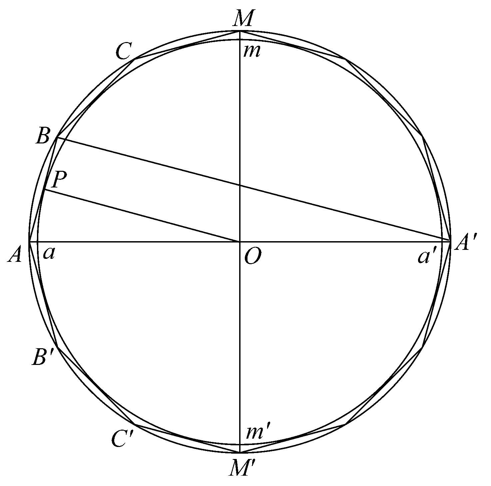
设有4n边的正多边形AB…A'…B'A绕AA'旋转画出切于其大圆为ama'm'的球．假设aa'、AA'在一直线上．
设圆R等于外切体的面．
现在
（BB'＋CC'＋…）：AA'＝A'B：BA ［如同命题21］
于是
AB（BB'＋CC'＋…）＝AA'·A'B．
因此 R的半径＝
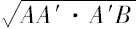
［命题29］＞A'B．
但是A'B＝2OP，P是AB与圆ama'm'的切点．
所以 R的半径＞圆ama'm'的直径．
这里R，当然还有外切体的面，大于已知球的大圆的4倍．
命题31 如前所述的球的外切旋转体等于一个锥，该锥的底等于旋转体的面，其高等于球的半径．
如前所述的旋转体包含于一个大球中，又因为到旋转的多边形任一边的垂线长等于里面球的半径，于是该命题与命题26相同．
推论 对于球的外切体大于4倍的一个锥，该锥的底是球的一个大圆，其高等于球的半径．
因为立体的面大于4倍里面球的大圆［命题30］，于是其底等于立体的面，其高等于球的半径的锥大于同高且以大圆为底的圆锥的4倍［引理1］．
因此，由此命题，立体的体积大于4倍后面的圆锥．
命题32 如果一个4n边的正多边形内接于一球的一个大圆，如ab…a'…b'a，且一相似的多边形AB…A'…B'A外切于此大圆，如果这两个多边形随大圆分别绕直径aa'，AA'旋转，以使得它们依次描出内接于球和外切于球的立体图形，那么
（1）外切和内接图形面的比是它们边的二次比；
（2）它们的图形（即它们的体积之比）是它们边的三次比．
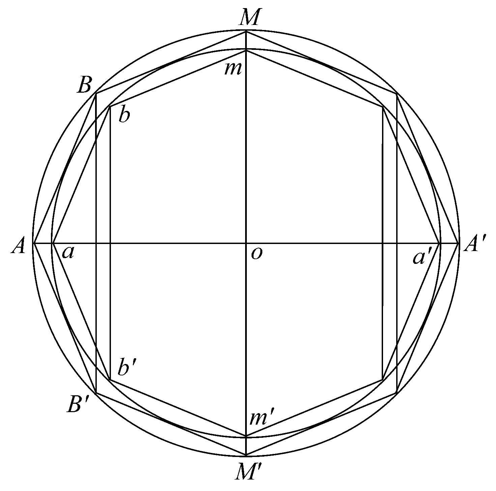
（1）设AA'、aa'在同一直线上，且MmOm'M'是直径并与它们交成直角．
连接BB'、CC'、…和bb'、cc'、…，且它们彼此平行且平行于MM'．
假设R、S是圆且使得
R＝外切体的面，
S＝内接体的面．
而且 （R的半径）2＝AB（BB'＋CC'＋…）， ［命题29］
（S的半径）2＝ab（bb'＋cc'＋…）. ［命题24］
又因为两多边形相似，所以这两个等式中的矩形也是相似的，且有比为
AB2：ab2．
因此
外切体的面：内接体的面＝AB2：ab2；
（2）取一个其底为圆R、其高等于Oa的圆锥V和其底为圆S、其高等于从O到ab所作的垂线p的圆锥W．
而且V、W分别等于外切和内接图形的体积．［命题31，26］
因为两多边形相似，于是
AB：ab＝Oa：p
＝圆锥V的高：圆锥W的高，
又如上所证，两圆锥的底（即圆R、S）的比是AB2对ab2的比．
所以 V：W＝AB3：ab3．
命题33 任一球面等于它的大圆的4倍．
设圆C等于4倍的大圆．
如果C不等于球面，那么它必须小于或大于球面．
Ⅰ.假设C小于球面．
于是可求两个线段β、γ，其中β是较大的，且使得
β：γ＜球面：C． ［命题2］
取线段δ为β、γ的比例中项．
假设外切和内接于大圆的边数为4n的两相似多边形的边之比小于β：δ． ［命题3］
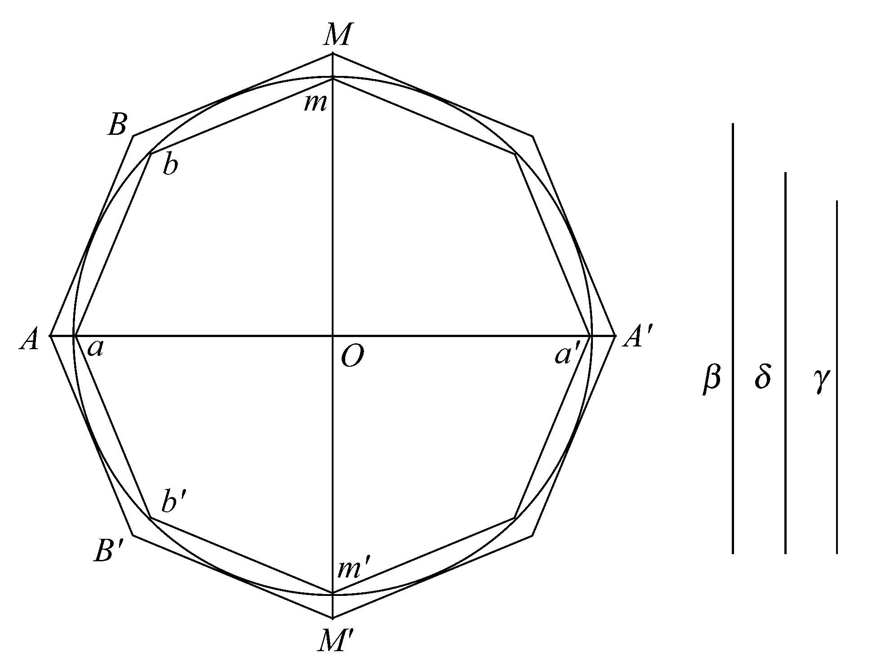
设两多边形和圆绕共同的直径一起旋转，于是画出如前面命题中的各旋转体．
因此外切体的面：内接体的面
＝（外切体的边）2：（内接体的边）2 ［命题32］
＜β2：δ2，或者β：γ
＜球面：C，由前结论．
但是这是不可能的，因为外切体的面大于球面［命题28］，而内接体的面小于C［命题25］．
所以C不小于球面．
Ⅱ.假设C大于球面．
取线段β、γ，其中β是较大者，且使得
β：γ＜C：球面．
如前所述的大圆的外切、内接相似正多边形，使得它们的边之比小于β：δ［命题3］，并以通常的方法形成的各旋转体．
在此情况下，
外切体的面：内接体的面＜C：球面．
但是这是不可能的，因为外切体的面大于C［命题30］，而内接体的面小于球面［命题23］．
这样C不大于球面．
因为C既不大于又不小于球面，所以C等于球面，即球面等于4倍的大圆．
命题34 若圆锥的底等于球的大圆、它的高等于球的半径，则该球的体积为该圆锥体积的4倍．
设有以ama'm'为大圆的球．
现在，如果球体积不等于所述圆锥的4倍，那它大于或者小于该圆锥的4倍．
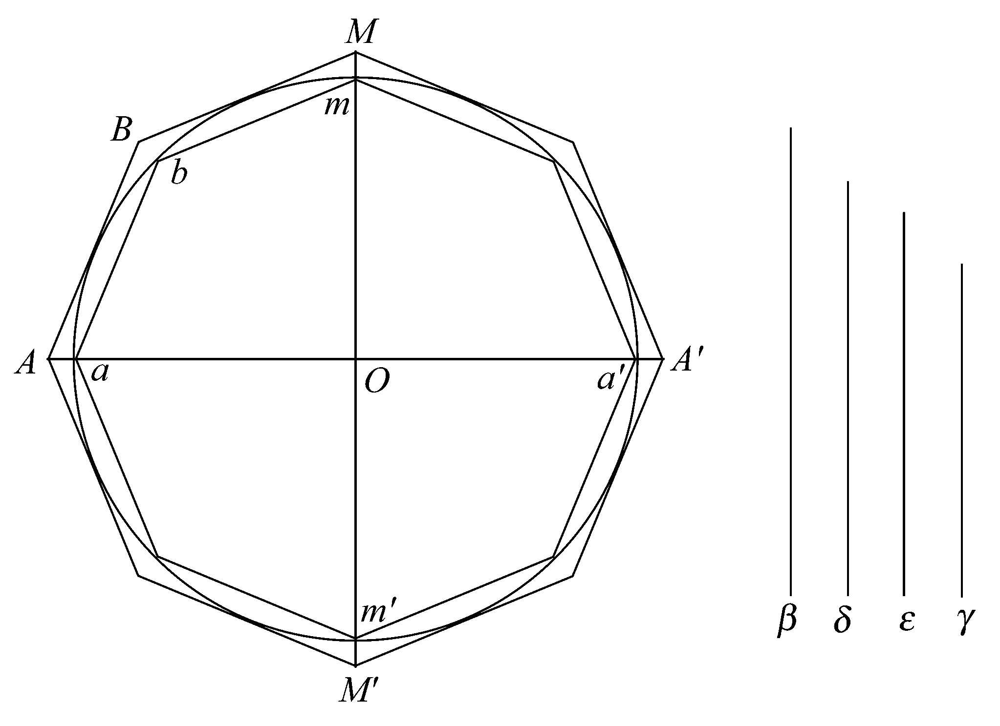
Ⅰ.若可能，设球大于4倍的圆锥．
假设V是其底等于4倍球的大圆、其高等于球半径的圆锥的体积．
由假设球体积大于V；且能求得两线段β、γ（β＞γ），使得
β：γ＜球的体积：V．
在β和γ之间插入两个算术平均线段δ、ε．
设边数为4n的外切、内接于大圆的两相似正多边形之比小于β：δ． ［命题3］
设圆的直径与两多边形的直径在同一直线上，又设它们与圆绕aa'旋转画出两个立体的面．那么这两个立体的体积之比是它们边的三次比． ［命题32］
于是 外切立体的体积：内接立体的体积
＜β3：δ3，由假设得出
＜β：γ，更有（因为β：γ＞β3：δ3）[13]
＜球的体积：V，由前假设．
但是这是不可能的，因为外切立体的体积大于球的体积，而内接立体的体积小于V． ［命题27］
因此，球不大于V，或不大于前述说明中的4倍的圆锥．
Ⅱ.如果可能，设球体积小于V．
在这种情况下，我们取β、γ（β＞γ）使得
β：γ＜V：球的体积．
其作图和证明如前，我们最后有
外切立体的体积：内接立体的体积
＜V：球的体积．
但是这是不可能的，因为外切立体的体积大于V［命题31推论］，而内接立体的体积小于球的体积．
因此球体积不小于V．
因为球体积既不小于又不大于V，于是它等于V，或等于命题中所述圆锥的4倍．
推论 从已证的命题中可以得出：以球的大圆为底、以球的直径为高的圆柱体积是球体积的3/2，它的侧面连同两底是球面的3/2．
因为圆柱体积是与它同底同高圆锥体积的3倍［Eucl.xii.10］，即是同底，其高等于球半径的圆锥体积的6倍．
但是球体积是后面圆锥体积的4倍［命题34］，所以该圆柱体积是球体积的3/2．
又因为一个直圆柱的侧面积等于以底圆直径和圆柱高的比例中项为半径的圆面积． ［命题13］
在此情形，高等于球的直径，所以该圆的半径就是球的直径，或该圆等于球大圆的4倍．
因此，包含两底的直圆柱表面积是大圆面积的6倍．
且球面是大圆的4倍［命题33］，因此
命题35 在弓形LAL'（A是弧的中点）上内接一个多边形LK…A…K'L'，LL'是其一边，其他边数为2n并各边都相等，如果多边形和弓形绕直径AM旋转，形成一个内接于球缺的立体图形，那么该内接体的面等于一个圆，该圆半径上的正方形等于矩形
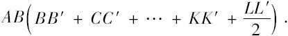
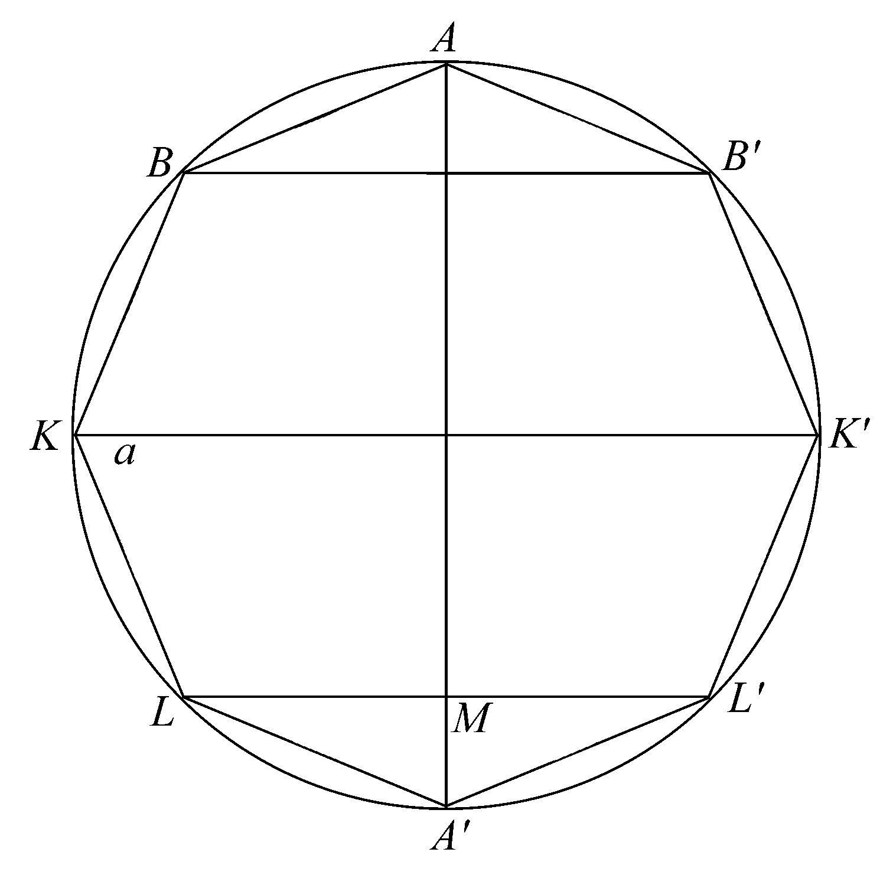
内接图形的面由一些圆锥的部分面构成．
我们逐次选取这些圆锥，首先圆锥BAB'的侧面等于一圆，该圆的半径是
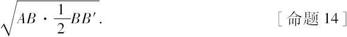
平截头体BCC'B'的面等于一圆，该圆的半径是
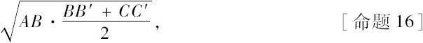
等等．
按照这个方法进行，然后相加，因为两圆之比如同半径的二次比，于是我们求得内接图形的面等于一圆，该圆的半径是
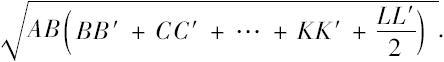
命题36 如上所述的内接于球冠的图形的面小于球冠的面．
这是显然的，因为球冠的圆形底是两个面共同的边界，其中之球冠包含另一个立体，而两者凹向同一个方向［假设4］．
命题37 由LK…A…K'L'绕AM旋转所成的内接于球缺的立体图形的面小于半径等于AL的圆．
设直径AM交弓形LAL'为其一段的圆于A'．连接A'B．
如在命题35中，内接立体图形的面等于一圆，该圆的半径上的正方形是
AB（BB'＋CC'＋…＋KK'＋LM）.
但是，这个矩形＝A'B·AM ［命题22］
＜A'A·AM
＜AL2．
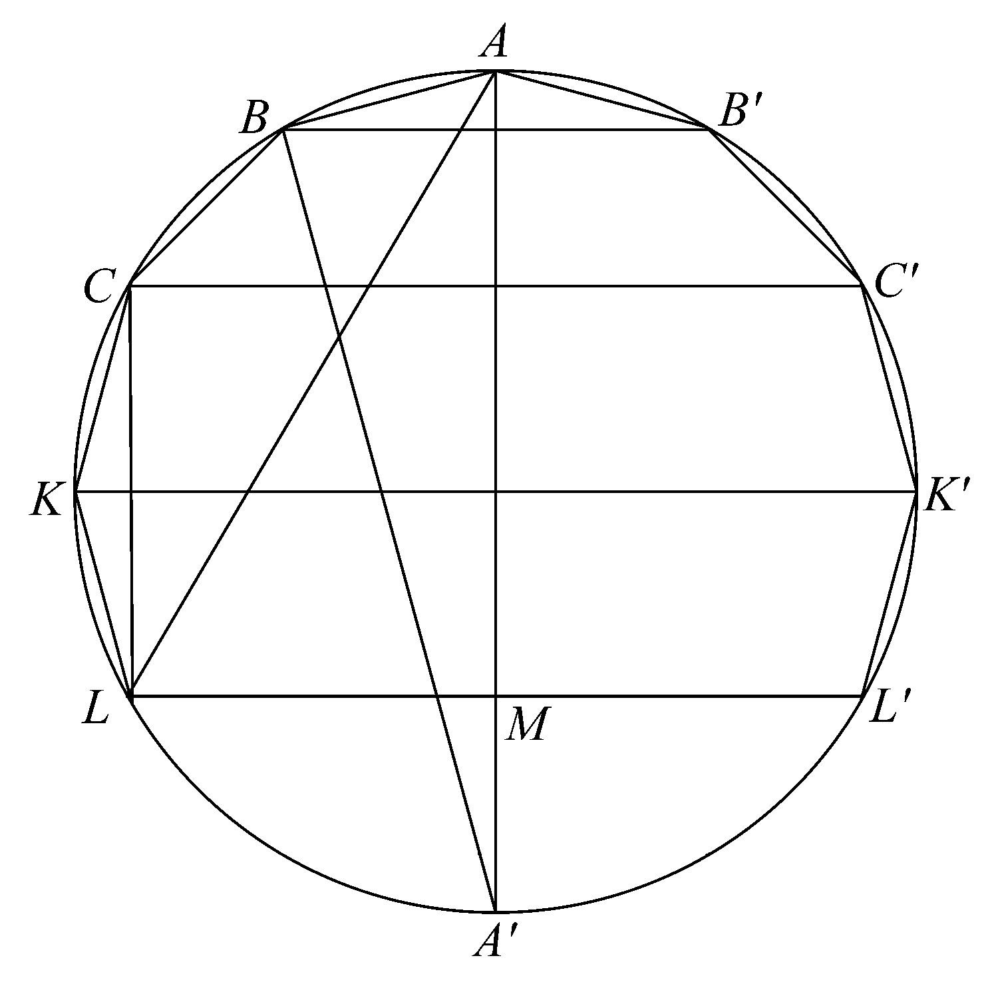
因此，内接立体图形的面小于以AL为半径的圆．
命题38 如前所作，内接于小于半球的球缺的立体图形和以球缺的底为底、以球心为顶点的圆锥等于一个圆锥，该圆锥的底等于内接图形的面，其高等于从球心到多边形任一边的垂线．
设O是球心，p是从O到AB的垂线长．
假设作以O为顶点，分别以BB'、CC'、…为直径的圆作为底的一些圆锥．
那么扁菱形体等于一个圆锥，该圆锥的底等于圆锥BAB'的面、其高等于p． ［命题18］
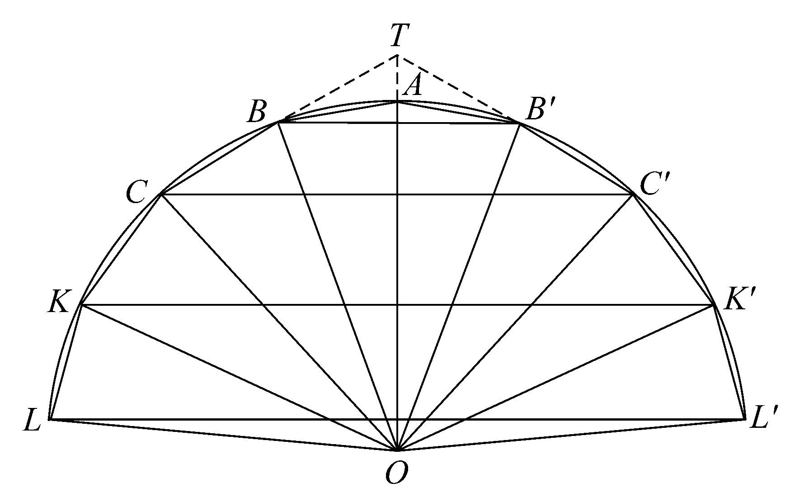
又若CB、C'B'交于T，所作的三角形OBC绕AO旋转的体，即两扁菱形体OCTC'与OBTB'之差等于一个圆锥，该圆锥的底等于平头截体的面，其高等于p． ［命题20］
类似地，对于三角形COD绕OA旋转所得的体亦有上述结果，等等．
以上相加，于是内接球缺的立体图形与圆锥OLL'一起等于一个圆锥，该圆锥的底等于内接体的面，其高等于p．
推论 一个圆锥，其底是半径等于AL的圆，其高等于球半径，此圆锥大于内接球缺的立体与圆锥OLL'之和．
由本命题，内接立体与圆锥OLL'一起等于一个圆锥，该圆锥的底等于内接立体的面，其高等于p．
这后面的圆锥小于高等于OA、底等于以AL为半径的圆的圆锥，因为高p小于OA，而立体的面小于以AL为半径的圆． ［命题37］
命题39 设lal'是球的一个大圆的一段弧，且小于半圆．设O是球心，连接Ol，Ol'．假设一个多边形外切于扇形Olal'，除两半径外，使得它的边数是2n，且各边都相等，其各边是LK，…，BA，AB'，…，K'L'；又设OA是大圆的半径，且平分弧lal'．
于是多边形的外接圆与已知大圆有相同的中心．
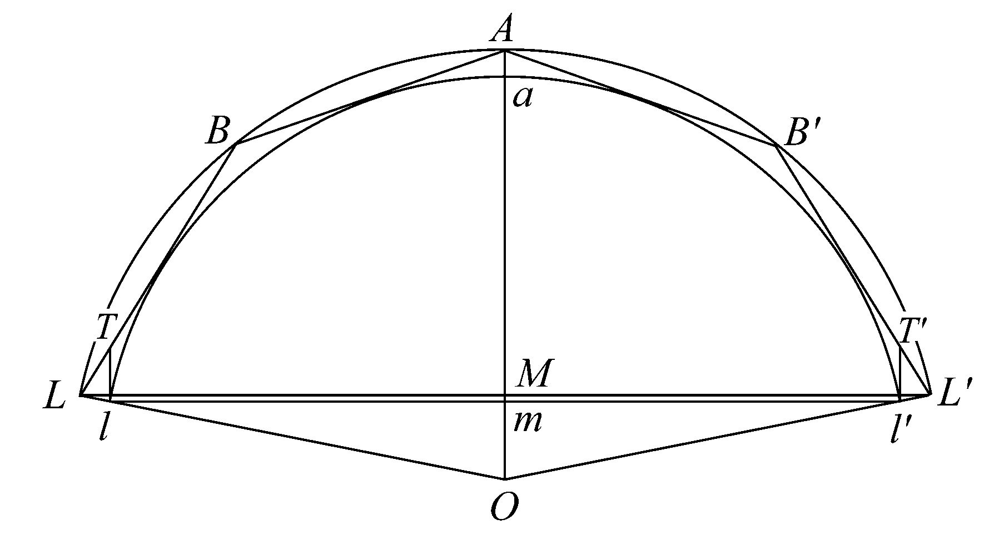
现在假定多边形和两圆绕OA旋转．那么两圆将画出两个球，除A外角点在外球上将画出具有直径BB'，…的一些圆．各边与里面弧的切点在内球上将画出一些圆，各边将画出圆锥或部分圆锥的面，由旋转等边多边形而得到的外切内球缺的整个图形其底为以LL'为直径的圆．
这样
外切于球扇形的立体图形的面（除去底面）大于球缺的表面，此球缺的底为以ll'为直径的圆．
因为在l，l'点向里面的弧作切线LT，L'T'．这些和多边形的边由它们的旋转将画出一个立体，其面大于球缺的面［假设4］．
但是lT旋转画出的面小于由LT旋转画出的面，因为角TlL是一个直角，所以LT＞lT．
因此由LK…A…K'L'旋转得到的面大于球缺面．
推论 关于球扇形如此所画的图形的面等于一个圆，该圆半径上正方形等于矩形
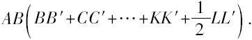
关于该内接于外球的外切图形，应用命题35的证明．
命题40 如前所示外切于球扇形的面大于半径等于al的圆．
设直径AaO交大圆和旋转多边形外切的圆于a'，A'．连接A'B，设AB与里圆切于N，连接ON．
现在由命题39的推论，外切于球扇形Olal'的立体图形的面等于一圆，该圆半径上的正方形等于矩形
但是这个矩形等于A'B·AM． ［如在命题22中］
其次，因为AL'，al'是平行的，于是两三角形AML'，aml'是相似的．以及AL'＞al'；所以AM＞am．
也有 A'B＝2ON＝aa'．
所以 A'B·AM＞aa'·am
＞al'2．
因此外切于球扇形的立体图形的面大于一个半径等于al'或al的圆．
推论1 外切于球扇形的图形的体和与以O为顶点、以LL'为直径的圆作为底的圆锥一起等于一个圆锥的体积，该圆锥的底等于外切图形的面，其高是ON．
由于图形内接于与内球同心的外球，因此应用命题38的证明．
推论2 外切图形的体积与圆锥OLL'一起大于一个圆锥，该圆锥的底是半径等于al的圆，其高等于里球的半径（Oa）．
由于图形的体积与圆锥OLL'一起等于一个圆锥，该圆锥的底等于图形的面，其高等于ON．
且图形的面大于半径等于al的圆［命题40］，而两高Oa，ON相等．
命题41 设lal'是球的大圆的一段弧，它小于半圆．
假设一个多边形内接于扇形Olal'，并使得各边lk，…，ba，ab'，…，k'l'都相等且边数为2n．设一个相似多边形外切于扇形，使得它的各边平行于第一个多边形的对应边；作外面多边形的外接圆．
现在设两多边形和两圆绕OaA一起旋转，那么，
（1）上述作的外切旋转体和内接旋转体的面之比是AB2比ab2；（2）两旋转体分别与有同底且以O为顶点的锥一起的体积之比是AB3比ab3．
（1）因为上述两面分别等于两圆，且两圆半径上的正方形分别为矩形
和
但是两矩形之比是AB2对ab2之比．所以同样是两面之比．
（2）作OnN垂直于ab和AB，设等于外切，内接旋转体的面的圆分别用S和s表示．
因为外切旋转体与圆锥OLL'一起的体积等于一个底是S，高是ON的圆锥． ［命题40推论1］
内切旋转体与圆锥Oll'一起的体积等于一个底是S，高是On的圆锥． ［命题38］
但是 S：s＝AB2：ab2，
和 ON：On＝AB：ab．
所以外切体连同圆锥OLL'一起的体积与内接体连同圆锥Oll'一起体积之比如同AB3与ab3之比． ［引理5］
命题42 如果lal'是小于半球的球缺，Oa垂直于球缺的底，那么球缺的表面积等于半径为al的圆．
设R是半径等于al的圆．然后设球缺的面为S，如果它不等于R，那么它大于或小于R．
Ⅰ.假设S＞R．
设lal'是一个大圆的一个弓形，它小于半圆．连接Ol，Ol'，又设边数为2n的两相似等边多边形外切和内接于扇形，且使得
外切多边形：内接多边形＜S：R． ［命题6］
现在设两多边形与弓形绕Oat旋转，就形成了外切与内接于球缺的两旋转体．
那么
外切体的面：内接体的面
＝AB2：ab2 ［命题41］
＜S：R，由假设．
但是外切体的面大于S． ［命题39］
所以内切体的面大于R，由命题37，这是不可能的．
Ⅱ.假设S＜R．
在此情况下，我们作外切和内接多边形使得它们的比小于R：S；我们得到如下结果:
外切体的面：内接体的面
＜R：S． ［命题41］
但是外切体的面大于R． ［命题40］
所以内接体的面大于S，这是不可能的． ［命题36］
因为S既不大于又不小于R，因此
S＝R．
命题43 即使球缺大于半球，它的表面积仍等于一圆，此圆半径等于al．
设lal'a'是球的一个大圆，aa'是垂直于ll'的直径；又设la'l'是小于半圆的一个弓形．
那么，由命题42，球缺lal'的表面积等于一圆，该圆的半径等于a'l的圆．
同样整个球面等于半径为aa'的圆． ［命题33］
但是aa'2-a'l2＝al2，且两圆之比如同它们半径的二次比． ［Eucl.xii.2］
由于球缺lal'的面是球面与球缺la'l'表面之差，所以它等于半径为al的圆．
命题44 球扇形的体积等于一个圆锥，该圆锥的底等于包含在球扇形内的球缺的表面，其高等于球的半径．
设R是一个圆锥，它的底等于球缺lal'的表面，其高等于球的半径；设S是球扇形的体积．
如果S不等于R，那么S必须大于或小于R．
Ⅰ.假设S＞R．
求两个线段β，γ，其中β是较大的，使得
β：γ＜S：R；
又设δ，ε是β，γ之间的两个算术平均线段．
设lal'是球的一个大圆的一个弓形．连接Ol，Ol'，又设边数为2n的等边的两相似多边形外切，内接于扇形，如前所示，但必须使它们边之比小于β：δ． ［命题4］
然后设两多边形与弓形绕OaA旋转，生成两个旋转体．
这两个体的体积分别用V，v表示，我们有
（V＋圆锥OLL'）：（v＋圆锥Oll'）＝AB3：ab3 ［命题41］
＜β3：δ3
＜β：γ[14]，更加，
＜S：R，由假设
现在 （V＋圆锥OLL'）＞S，
所以也有 （v＋圆锥Oll'）＞R.
但是，这是不可能的，这可由命题38的推论结合命题42，43得知．
因此
Ⅱ.假设 S＜R．
在此情形，我们取β，γ，使得
β：γ＜R：S，
且其余的作图及论述如前．
这样我们得到关系式
（V＋圆锥OLL'）：（v＋圆锥Oll'）＜R：S．
现在 （v＋圆锥Oll'）＜S．
所以 （V＋圆锥OLL'）＜R；
这是不可能的，这可由命题40的推论2结合命题42，43得知．
因为S既不大于又不小于R，所以
S＝R．
注释[15]
[1]本篇及以下的阿基米德著作的译文选自T.L.Heath The Works of Archimedes（Dover Publicatios，Inc.Mineola，New York，1912），其中的小体辅文是Heath的评注．
[2]虽然用的词是，而“公理”却更像定义的性质，事实上，欧多克索斯在笔记中称它们为ο ’ροι．
[3]阿基米德所称的曲线不仅包括有连续曲率的曲线，也包括由若干曲线或直线段组成的线．
[4]这个著名的阿基米德假设，如它呈现出的那样，很难说是直线的定义，虽然普罗克洛斯（Proclus，希腊哲学家、数学家、数学史家，410-485）说［P.lloed.Friedlein］“阿基米德定义（-）直线为具同端点的那些［线］中之最短者．盖由于，如欧几里得（Euclid）的定义所说，，因此它是具同端点中之最小者”．普罗克洛斯刚刚解释了［P.109］欧几里得的定义，如将看到，它不同于我们教本中给出的普通形式；一直线不是“平直地位于其端点的那种”，而是”普罗克洛斯写的是“他［欧几里得］凭借这个来指明［在所有线中］直线独自具有一距离，它等于其上的点之间的距离．因为，只要它的一个点从另一点移开，则以此两点为端点的直线的长就增大了；而这就是的含意．但如果你在一圆周或任一其他线上取两点，在它们之间沿此线切下的距离是大于分开它们的区间；而这是除去直线而外的每一条线的情形．”这里显示出欧几里得定义应在一种意义上，理解为非常类似阿基米德假设中的定义，而我们大半可以译成“一直线是同其上的点均等伸张）者．”或者，为了更紧随普罗克洛斯的解释，“一直线就是和其上的点表现同等伸张者．”
[5]关于这个假设可参看引论第三§2.
[6]因为PO：OH=ST：CN.
[7]当然，这是所述的几何等价关系，即当α、β都小于直角，若α＜β，则cosα＞cosβ．
[8]见Eucl.xii.11．“等高的圆锥或等高的圆柱之比如同它们的底之比．”
见Eucl.xii.14．“等底的圆锥或等底的圆柱之比如同它们的高之比．”
[9]见Eucl.xii.13．“若一个圆柱被平行于它的底面的平面所截，则截得的两圆柱之比如同它们的轴之比．”
[10]见Eucl.xii.15．“在相等的圆锥或圆柱中，其底与高成互反比例；又若两圆锥或圆柱的底与高成互反比例，则二者相等．”
[11]见Eucl.xii.12．“相似圆锥或相似圆柱之比如同它们底的直径的三次比．”
[12]在海伯格的翻译“prioris coni”中有一个错误．（认为）该垂线不是从被平面截得的圆锥的顶点作出的，而是从另一个的顶点作出的．
[13]这个β：γ＞β3：δ3是阿基米德假定的．欧托西乌斯（Eutocius）[16]在他的如下注释中证明了这个性质．
取x使得 β：δ＝δ：x．
于是 （β-δ）：β＝（δ-x）：δ，
又因为β＞δ，所以β-δ＞δ-x．
但是，由假设β-δ＝δ-ε．
所以δ-ε＞δ-x， （1）
或x＞ε．
又假设δ：x＝x：y，
如前所证，有δ-x＞x-y， （2）
由（1）、（2）得δ-ε＞x-y．
又由假设δ-ε＝ε-γ，
所以ε-γ＞x-y．
因为x＞ε，所以y＞γ．
现在，由假设β、δ、x、y成连比例，所以
β3：δ3＝β：y
＜β：γ．
[14]参看本章命题34的附注．
[15]中译本各篇之后的“注释”［1］，［2］，…相应于霍金原书中各篇的脚注1，2，……。
[16]欧托西乌斯为数学家，生于巴勒斯坦，是阿基米德著作《球和圆柱》《圆的度量》和《平面平衡》以及阿波罗尼奥斯（Apollonius）《圆锥曲线论》前四卷的注释者．在他的注释里保留了最早的希腊几何学家对数学题的解法，这是珍贵的历史遗产．还记载了在已知线段之间插入两个比例中项的解法，以及阿基米德用相交的圆锥曲线解三次方程的方法．他对阿基米德的评注在1269年被译成拉丁文．